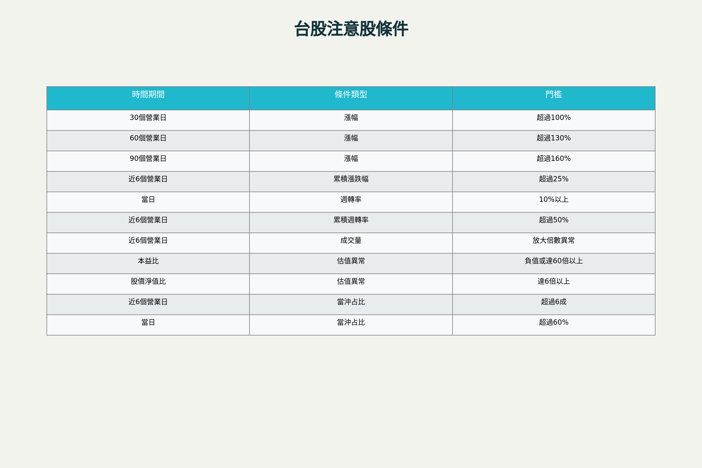
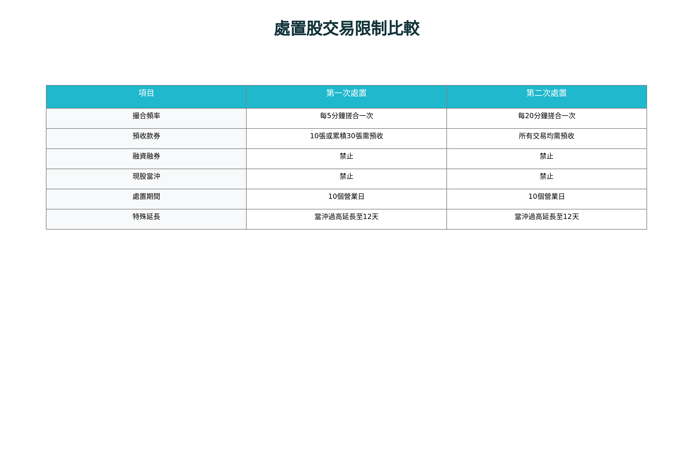

台股處置股與注意股：條件分析與交易策略全解析
近年來台股交易熱絡，處置股與注意股機制成為投資人不可忽視的風險控管工具。根據證交所最新統計，2024年至今已有超過145次處置案例，顯示市場監管機制的重要性日益凸顯。本報告深入剖析處置股與注意股的列管條件、交易限制，並提供實務投資策略建議，協助投資人在這類高風險高報酬的股票中找到操作契機。
注意股與處置股的監管機制
注意股的列管條件
注意股是台股監理機制的第一道防線，當個股出現交易異常時會被列入觀察名單。證交所設定了多項量化標準來判定異常交易行為：[^1][^2][^3]

台股注意股列管條件一覽表
價格波動異常標準包含短、中、長期三個維度的漲幅門檻。30個營業日漲幅超過100%、60個營業日漲幅超過130%、90個營業日漲幅超過160%，或近6個營業日累積漲跌幅超過25%的個股都會被納入注意名單。[^1][^2]
成交量與週轉率異常是另一重要指標。當日週轉率超過10%、近6個營業日累積週轉率超過50%，或近6個營業日成交量出現異常放大倍數時，該股將被標記為注意股。[^2][^3][^1]
估值異常標準則關注本益比與股價淨值比的合理性。本益比為負值或達60倍以上、股價淨值比達6倍以上且伴隨高週轉率的個股會被特別關注。[^1][^2]
當沖交易比重過高是近年新增的監管重點。最近6個營業日當沖成交量占總成交量比重超過6成，或當日當沖成交量占該日總成交量比率超過60%的個股將被列為注意股。[^2][^1]
處置股的升級條件與措施
當注意股持續出現異常交易行為時，就會升級為處置股。具體條件包括連續3個營業日或5個營業日達到注意股標準，或在最近10個營業日內有6個營業日、最近30個營業日內有12個營業日達到注意股標準。[^4][^5][^6]

台股處置股交易限制比較表
第一次處置措施相對溫和，採用每5分鐘搓合一次的分盤交易機制，處置期間為10個營業日。當投資人單筆委託達10交易單位或多筆累積達30交易單位以上時，需預收款券。[^1][^2][^4]
第二次處置措施更為嚴格，改為每20分鐘搓合一次，所有交易均需預收款券，且禁止融資融券與現股當沖交易。值得注意的是，若處置原因涉及當沖比重過高，處置期間將從10天延長至12天。[^2][^4][^1]
處置股的市場表現統計分析
歷年處置股績效數據
根據近5年統計資料顯示，處置股呈現明顯的「前熱後冷」特徵。處置前10日的平均報酬率高達39.49%，其中87.5%的股票呈現正報酬，反映大部分個股是因漲幅過大而被處置。[^7][^8]
然而進入處置期間後，平均報酬率大幅下降至3.63%，正報酬股票比例降至約57%。更值得關注的是，處置結束後10日的平均報酬率進一步下滑至1.13%，正報酬比例僅剩43.9%，顯示處置機制確實發揮了降溫效果。[^8][^7]
年度差異顯著：2020-2021年牛市期間處置次數明顯較多，報酬率也相對較高；2022年空頭市場中處置次數大幅減少，報酬表現相對較差。這反映了處置股表現與整體市場環境的高度相關性。[^7]
不同處置類型的表現差異
統計顯示5分盤與20分盤處置股具有最明顯的「前期跌後期漲」趨勢特徵。這類股票在處置初期通常出現較大跌幅，但在處置中後期往往有較強的反彈表現，為投資策略制定提供了重要參考依據。[^8]
值得注意的是，45分盤處置股在處置初期的報酬率反而表現較好，這種特殊現象可能與個股特性和市場環境有關。[^8]
處置股投資策略分析
延後進場策略的優勢
實證研究顯示，延後5天進場的策略能夠顯著提升投資績效。相較於處置首日進場，延後進場策略的報酬率可提升至原本的20倍，同時大幅降低最大回檔風險。[^8]
這種策略的核心邏輯在於避開處置初期的恐慌性拋售。由於處置股交易限制增加了買賣難度，許多短線投資者會在初期恐慌出場，造成股價急跌。待市場情緒穩定後，具備基本面支撐的個股往往出現反彈行情。[^9][^10]
基本面篩選的重要性
深度基本面分析是處置股投資成功的關鍵因素。投資人需要區分個股被處置的真正原因：是短期市場情緒波動，還是公司基本面出現問題。[^9][^11]
優質處置股通常具備以下特徵：公司財務健全、營運展望佳、產業前景良好，且被處置原因主要為技術面因素而非基本面惡化。投資人應詳細檢視公司最新財報、重大訊息公告，以及產業發展趨勢。[^11][^9]
資訊透明度評估同樣重要。公司是否充分揭露被列為處置股的原因、交易限制及潛在風險，將直接影響投資決策的品質。[^9]
風險控制與資金管理
分散投資原則在處置股操作中尤為重要。由於單一處置股的不確定性較高，投資人應將資金分散至多個標的，降低集中風險。建議單一處置股投資比重不超過總資金的5-10%。[^12][^9]
嚴格停損機制是必要的風險控制工具。考量處置股的高波動特性，建議設定10-15%的停損點，並嚴格執行。同時要注意流動性風險，處置股的撮合時間延長可能導致停損執行困難。[^9][^13]
預收款券限制增加了資金成本和操作複雜度。投資人需要預先準備足夠的資金或股票，不能如一般股票採用T+2交割。這要求投資人在資金配置上更加謹慎。[^2][^14]
實務操作要點與注意事項
交易技巧與時機掌握
搓合時間特性是處置股交易的關鍵考量因素。5分鐘或20分鐘一次的搓合機制意味著投資人無法即時成交，需要適應這種交易節奏。建議採用限價單而非市價單，避免價格偏差過大。[^2][^15]
成交價格落差是處置股交易的常見現象。由於流動性較差，實際成交價格往往與委託價格存在較大差異。投資人需要預留價格緩衝空間，或採用分批委託的方式降低風險。[^15]
監管法規的動態調整
證交所持續優化處置股監管機制，近年來特別加強對當沖交易的監管。投資人需要密切關注法規變動，適時調整操作策略。[^1][^2]
新制影響評估顯示，當沖處置新制實施後，符合警示標準的個股數量明顯增加，反映市場投機氛圍的變化。這要求投資人在選股時更加謹慎，避免踩到監管地雷。[^16]
資訊獲取與研判
官方資訊管道包括證交所官網每日公布的注意股與處置股名單、處置原因及期間等詳細資訊。投資人應養成定期查閱的習慣，掌握最新動態。[^17][^18][^6]
專業分析工具如處置股風險預警系統，能夠協助投資人提前識別潛在的處置風險，準確度可達96%以上。善用這些工具有助於提升投資決策品質。[^19]
結論與投資建議
處置股投資是一把雙刃劍，既蘊含超額報酬機會，也伴隨相當的投資風險。成功的處置股投資策略需要結合市場時機判斷、基本面分析、風險控制等多個層面。
核心建議包括：採用延後進場策略避開初期波動、嚴格篩選基本面良好的標的、實施有效的風險控制機制、保持對監管動態的敏感度。投資人應根據自身風險承受能力和投資目標，審慎評估是否參與處置股投資。
未來展望方面，隨著台股市場持續發展和監管制度不斷完善，處置股機制將更加精準和有效。投資人需要持續學習和適應，在變化中尋找投資機會，在風險中保持理性判斷。